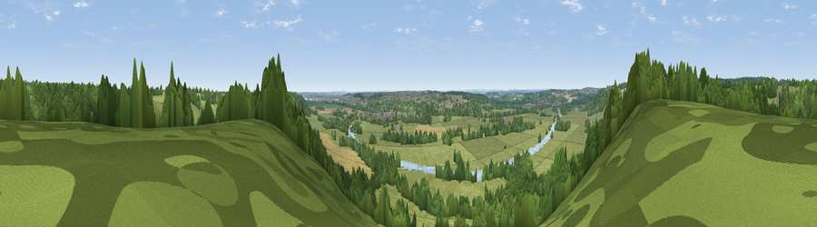

Viewpoint near Mapledurham
#33745 in England · top 27% of its area beats it · near MapledurhamWhere it is
The exact computed spot (SU 66275 77925). Click the marker for map links.
The view, rendered

A 360° render of this exact spot computed from the terrain model, tree cover and land cover — summer colours, afternoon light, calibrated against photographs of famous viewpoints. Real trees, hedges and buildings will differ in detail.
The panorama
Grey silhouette: terrain skyline in each direction (720 bearings, Earth curvature and refraction included). Dashed green: skyline with trees (+15 m) and buildings (+8 m) as obstacles. Blue strip: how far the ground is visible on each bearing.
Where the view opens
Wedge length = distance to the farthest visible ground on that bearing (vegetation-aware). Rings at 10, 25 and 50 km.
What fills the view
54% grassland · 34% woodland · 7% cropland · 3% water · 3% built-up
Angular shares of the visible panorama (visual magnitude), not map area. Landscape diversity 0.47 (0–1 Shannon).
Key numbers
More beautiful places nearby
The staircase of upgrades: each row has a higher view potential than everything closer. Driving times are estimates from straight-line distance, calibrated against real road routing — check an actual route before setting out.
| Place | Direction | Drive | Score |
|---|---|---|---|
| Viewpoint near Whitchurch-on-Thames | W · 2 km | ~6 min | 47.5 |
| Viewpoint near Streatley | WNW · 8 km | ~16 min | 57.2 |
| Viewpoint near Moulsford | WNW · 10 km | ~19 min | 58.8 |
| Viewpoint near Nuffield | N · 11 km | ~21 min | 62.3 |
| Viewpoint near Compton | WNW · 13 km | ~24 min | 64.1 |
| Viewpoint near Cookley Green | N · 14 km | ~25 min | 64.3 |
| Viewpoint near Cookley Green | N · 14 km | ~26 min | 68.5 |
| Viewpoint near Watlington | NNE · 16 km | ~28 min | 70.6 |
51.49639, -1.04669 · source: screening · position refined by local search. Computed location — check access rights before visiting.